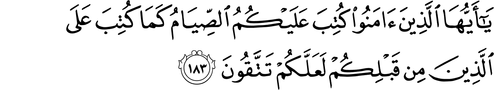
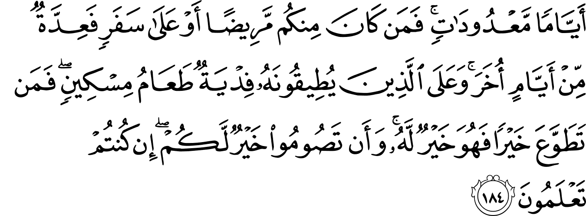
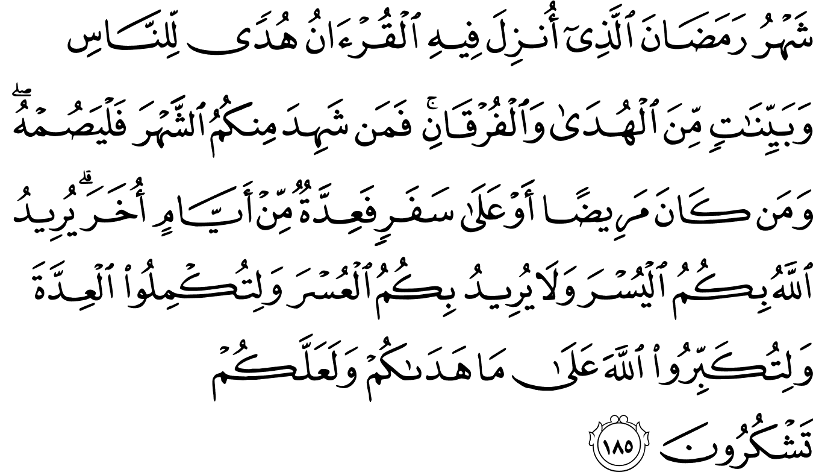

সূরা আল-বাক্বারাহ’র নিচের কয়েকটি আয়াতে আল্লাহ تعالى আমাদেরকে সিয়াম অর্থাৎ রোজা রাখার নির্দেশ দেবেন এবং কেন আমরা রোজা রাখি, রোজা রেখে কী লাভ, তা শেখাবেন।
তোমরা যারা বিশ্বাস করেছ, শোনো, তোমাদের উপর রোজা বাধ্যতামূলক করা হয়েছে, যে রকম তোমাদের পূর্বপুরুষদের উপর করা হয়েছিল। যাতে করে তোমরা আল্লাহর প্রতি সচেতন হও। [আল-বাক্বারাহ ১৮৩]
এখানে আল্লাহ تعالى বলছেন যে, রোজা রাখার উদ্দেশ্য না খেয়ে থাকা নয়, বরং রোজা রাখার উদ্দেশ্য হচ্ছে তাকওয়া অর্থাৎ আল্লাহর প্রতি সচেতনতা বাড়ানো। প্রথমে বোঝা দরকার তাকওয়া কী।
তাকওয়া শব্দটির অর্থ সাধারণত করা হয়—আল্লাহকে ভয় করা। এটি পুরোপুরি সঠিক অনুবাদ নয়, কারণ ‘ভয়’ এর জন্য আরবিতে ভিন্ন শব্দ রয়েছে—যেমন খাওফ خوف, খাশিয়া خشي, হিযর حذر; শুধু কু’রআনেই ১২টি আলাদা শব্দ ব্যবহার করা হয়েছে বিভিন্ন গভীরতার ভয়, সতর্কতা, আতঙ্ক ইত্যাদি তুলে ধরার জন্য। এর মধ্যে ‘তাক্বওয়া’ হচ্ছে ‘সবসময় পূর্ণ সচেতন’ থাকা বা আল্লাহর কথা মনে রেখে নিজেকে অন্যায় থেকে দূরে রাখা।[১][২]
ধরুন, আপনি প্রতিদিন কী করেন, সেটা নিয়ে একটা ‘রিয়েলিটি টিভি শো’ বানানো হচ্ছে। আপনার বাসার সবগুলো রুমে ক্যামেরা বসানো হয়েছে। আপনি ঘুম থেকে ওঠার পর ঘুমোতে যাওয়া পর্যন্ত সবসময় আপনার সাথে একজন ক্যামেরাম্যান আপনার দিকে ক্যামেরা তাক করে রেখেছে। আপনি কী বলছেন, কী করছেন, কী খাচ্ছেন, কী দেখছেন, সবকিছু প্রতি মুহূর্তে রেকর্ড করা হচ্ছে। কল্পনা করুন, যদি এরকম কোনো ঘটনা ঘটে তাহলে আপনার মানসিক অবস্থা কী হবে? আপনি প্রতিটা কথা বলার আগে চিন্তা করবেন যে, আপনার কথাগুলো মার্জিত হচ্ছে কি না, আপনার হাঁটার ধরন ঠিক আছে কি না, আপনি উল্টোপাল্টা দিকে তাকালে সেটা আবার রেকর্ড হয়ে গেলো কি না। আপনি টিভিতে যেসব হিন্দি সিরিয়াল, বিজ্ঞাপন, মুভি দেখেন, যেসব গান শুনেন, ইন্টারনেটে যে সব সাইট ঘুরে বেড়ান, সেগুলো ক্যামেরায় রেকর্ড হয়ে গেলে লোকজনের কাছে মান-সন্মান থাকবে কি না। এই যে ক্যামেরাম্যানের প্রতি আপনার চরম সচেতনতা, এটাই তাক্বওয়া। আল্লাহর تعالى প্রতি আপনার ঠিক একই ধরনের সচেতনতা থাকার কথা।
এখন প্রশ্ন হলো, রোজার সাথে তাকওয়ার সম্পর্ক কী?
একজন মানুষ যখন রোজা রাখে, সে একটা বিরাট সময় নিজেকে তার শারিরিক চাহিদা, কামনা থেকে নিজের ইচ্ছায় দূরে রাখে। ক্ষুধায় তার পেট মোড়ায়। হাত বাড়ালেই খাবার। ইচ্ছে করলেই সে মুখে একটু খাবার দিয়ে ক্ষুধাটা দমিয়ে ফেলতে পারে। কিন্তু না! সে নিজেকে বোঝায়: “মাগরিব হোক, তারপরে ইফতার, এর আগে কোনো খাবার নয়।” পিপাসায় তার গলা শুকিয়ে কাঠ হয়ে গেছে। হাত বাড়ালেই এক গ্লাস পানি, কোমল পানীয়। শুকনো গলা দিয়ে ঠাণ্ডা পানি নেমে যাওয়ার সুখকর চিন্তা তার মনে ঘুরপাক খায়। কিন্তু না, সে নিজেকে বোঝায়, “মাগরিব আসুক। এর আগে এক ফোঁটাও পানি না।” সারাদিন অফিস-স্কুল-কলেজে তার চোখের সামনে নানা প্রলোভন ঘুরে বেড়ায়। কিছুক্ষণ পর পর বিপরীত লিঙ্গের হাতছানি। টিভি ছাড়লেই অশ্লীলতা। ইন্টারনেটে গেলেই কামনার সাগরে ডুবে যাওয়া যায়। কিন্তু না, সে নিজেকে বোঝায়, “আমি রোজাদার। আমি এখন কোনো খারাপ কিছু দেখতে পারি না, কোনো খারাপ কিছু করতে পারি না।” দিনে কয়েকবার সে সুযোগ পেয়েছে মিথ্যা বলে বাড়তি সুবিধা নেওয়ার, নিজের দোষ ঢাকার, অন্যায়ভাবে সুবিধা হাতিয়ে নেওয়ার, অন্যের গীবত করার। কিন্তু না, সে নিজেকে সংযত করে, “আমি রোজাদার, আমি এখন মিথ্যা বলতে পারি না। আমার রোজা ভেঙ্গে যাবে।”
যখন আমরা রোজা রাখি না, তখন আমাদের শারীরিক চাহিদা আসলেই আমরা সেটা মিটিয়ে ফেলি, পাপ কাজের ইচ্ছা জাগলে করে ফেলি। ক্ষুধা লাগলেই খাই। পিপাসা পেলেই পান করি। কামনা জাগলে, তা পূরণ করে ফেলি। সুযোগ পেলেই মিথ্যা বলি, ঘুষ খাই, অন্যায় করি, গীবত করি। এভাবে আমরা প্রতিনিয়ত নিজেদেরকে ক্রমেই প্রবৃত্তির দাস বানিয়ে ফেলি। যার ফলে দিনে দিনে কুপ্রবৃত্তির উপর নিয়ন্ত্রণ হারাতে থাকি। প্রবৃত্তি জিততে থাকে, আর আমরা হারতে থাকি। কিন্তু যখন আমরা রোজা রাখি, প্রতিদিন একটা বিরাট সময় আমরা আমাদের প্রবৃত্তিকে শক্ত হাতে দমন করে রাখি। কিছুক্ষণ পর পর প্রবৃত্তি চাড়া দিয়ে উঠে, আমাদের উপর নিয়ন্ত্রণ নিয়ে নিতে চায়। কিন্তু তখনি আমরা সেটাকে পরাজিত করে নিজের উপর আবার নিয়ন্ত্রণ ফিরিয়ে নেই। এভাবে দিনের পর দিন আমরা প্রবৃত্তির উপর জিততে থাকি। তখন সেটা আস্তে আস্তে দুর্বল হতে থাকে। আল্লাহর تعالى নির্দেশ মানা, অন্যায় থেকে দূরে থাকাটা তখন আমাদের জন্য আরও সহজ হতে থাকে। এভাবেই আমরা রোজা রেখে তাকওয়া অর্জন করি।[১]
প্রাচীন আরবরা ঘোড়া নিয়ে যুদ্ধ করতে যেত। কিন্তু ঘোড়া উটের মতো উত্তপ্ত মরুভূমিতে দীর্ঘ সময় থাকার জন্য ঠিক উপযুক্ত নয়। এরা পানি ছাড়া বেশিক্ষণ থাকতে পারে না। একারণে আরবরা ঘোড়াকে মরুভূমির প্রখর উত্তাপে বার বার দৌড়িয়ে মরুভূমিতে টিকে থাকার প্রশিক্ষণ দিত। এভাবে ঘোড়াকে প্রচণ্ড তাপে যুদ্ধ করার জন্য তৈরি করাকে তারা সিয়াম বলত। সিয়াম, যাকে আমরা রোজা বলি, মুমিনদের জন্য একধরনের মিলিটারি ট্রেনিং। এটি আমাদের শক্ত করে, কঠিন পরিস্থিতি মোকাবেলা করার জন্য শারীরিক এবং মানসিক ট্রেনিং দেয়।[১][১৬]
এরপরের আয়াতে আল্লাহ تعالى আমাদেরকে শেখাবেন, কোন পরিস্থিতিতে রমজানে রোজা রাখা বাধ্যতামূলক নয়—
রোজা নির্দিষ্ট কিছু দিন। তাই তোমাদের মধ্যে কেউ যদি অসুস্থ থাকে, বা সফরে থাকে, তাহলে পরে একই সংখ্যক দিন পূরণ করবে। আর যাদের জন্য রোজা রাখা ভীষণ কষ্টের, তাদের জন্য উপায় রয়েছে — তারা একই সংখ্যক দিন একজন গরিব মানুষকে খাওয়াবে। আর যে স্বতঃস্ফূর্তভাবে বাড়তি ভালো কাজ করে, সেটা তার জন্যই কল্যাণ হবে। রোজা রাখাটাই তোমাদের জন্যই ভালো, যদি তোমরা জানতে। [আল-বাক্বারাহ ১৮৪]
নিজের উপর জোর করে, অসুস্থতা বাড়িয়ে রোজা রাখতে আল্লাহ تعالى আমাদেরকে বলেননি। আমাদের মধ্যে অনেকেই চেষ্টা করি জোর করে আল্লাহকে تعالى খুশি করার। আল্লাহ تعالى আমাদেরকে কোনো জবরদস্থি করতে বলেননি।
তাফসিরগুলোতে এই নিয়ে একাধিক মত রয়েছে। একাধিক সাহাবি (রা) থেকে আসা মত অনুসারে: কারো যদি অসুস্থতা বাড়ার সমূহ সম্ভাবনা থাকে, তাহলে তার জন্য রোজা রাখা বাধ্যতামূলক নয়। গর্ভবতী বা শিশু বাচ্চাকে দুধ পান করান এমন মা, বৃদ্ধ, অসুস্থ মানুষরা রমজান মাসে রোজা রাখতে কষ্ট হলে বা স্বাস্থ্যের প্রতি হুমকি থাকলে, প্রতিটি রোজার বদলে একদিন করে একজন গরিব মানুষকে সাধ্যমত খাওয়াবে। একইভাবে সফরে থাকলেও রোজা রাখা বাধ্যতামূলক নয়, যদি রোজা রাখার ফলে কষ্টের সৃষ্টি হয়।[১১][৩][৬] তবে একাধিক মাযহাবের মত অনুসারে কেউ যদি রমজানের পরে রোজা রাখতে সক্ষম হয়, তাহলে গরিব খাওয়ানো যাবে না, নিজে অবশ্যই রোজা রাখতে হবে। সুতরাং অসুস্থতা সাময়িক হলে এবং মা’দের রমজানের পরে রোজা রাখতে হবে, গরিব খাওয়ালে হবে না।
কী ধরণের অসুস্থতা হলে এবং কী ধরণের সফর হলে রোজা না রাখলেও হবে, এনিয়ে বিভিন্ন ফিকহ-এর আলেমদের মধ্যে মতবিরোধ রয়েছে।[১১][৩][৬] যেহেতু আল্লাহ تعالى এখানে নির্দিষ্ট করে কিছু বলেননি, তাই তারা আশংকা করেছেন যে, মানুষ ব্যাপারটাকে সহজভাবে নেবে এবং একটু অসুস্থ হলেই, বা সামান্য সফরে গেলেই রোজা রাখা ছেড়ে দেবে। তাই তারা সফরের দৈর্ঘ্য কতটুকু, কতদিনের হতে হবে, এনিয়ে কিছু শর্ত দিয়েছেন। কিন্তু এখন পর্যন্ত কোনো গ্রহণযোগ্য হাদিস থেকে এই শর্তগুলোর পক্ষে ইজমা হওয়ার মতো যথেষ্ট দলিল পাওয়া যায়নি বলে একাধিক তাফসিরবিদদের মত।[৩][৬] তাদের বক্তব্য হচ্ছে: আল্লাহ تعالى এখানে কোনো শর্ত দেননি, কারণ রোজা রাখার উদ্দেশ্য হচ্ছে তাকওয়া অর্জন। কেউ যদি আল্লাহর تعالى সাথে প্রতারণা করতেই চায়, নিজের প্রবৃত্তির কাছে নিজেকে বিক্রি করে দিতে চায়, তাহলে তার জন্য এই সব শর্ত থাকা বা না থাকাটা একই কথা। যে সবসময় সুযোগ খুঁজে কীভাবে আইনের ফাঁকফোকর বের করে পার পেয়ে যাওয়া যায়, তাকে হাইকোর্ট দেখিয়ে খুব একটা লাভ হয় না। বরং এই সব মানুষকে ঠিক করতে গিয়ে অন্য সবার জন্য ধর্মের মধ্যে অতিরিক্ত কড়াকড়ি করলে, তা উলটো মানুষকে ধর্মের প্রতি নিরুৎসাহিত করে।[৬]
আমাদের এটা মনে রাখতে হবে যে, ইসলাম ধর্ম আল্লাহই تعالى আমাদেরকে দিয়েছেন, কোনো মানুষ তা নির্ধারণ করেনি। কখন মানুষকে শক্ত নিয়ম দিতে হবে, কখন ছাড় দিতে হবে, ছাড় দিলে তার সুদূর প্রসারি ফলাফল কী হবে —এটা আল্লাহ تعالى যে কোনো মানুষের থেকে ভালো জানেন। সুতরাং কোনো এক প্রজন্মের ইসলামকে হালকা ভাবে নিয়ে অবহেলা করা দেখে, সে প্রজন্মের আলেমরা যদি ইসলামে নানা শক্ত নিয়ম, শর্ত যোগ করেন, তাহলে সেটা ভবিষ্যৎ প্রজন্মের জন্য সবসময় কল্যাণকর নাও হতে পারে, বরং তাদের প্রতি অন্যায় হয়ে যেতে পারে। একারণে আল্লাহ تعالى যদি কোনো নিয়ম মানার বেলায় শিথিলতা দেন, তাহলে আমাদের আল্লাহর تعالى প্রজ্ঞার উপর আস্থা রাখতে হবে।[৬]
এরপরের আয়াতে আমরা জানবো রমজান মাসের আসল গুরুত্ব কী—
রমজান মাস, যখন নাজিল হয়েছিল কুর’আন —মানুষের জন্য পথনির্দেশ, পরিস্কার বাণী যা পথ দেখায় এবং সত্য-মিথ্যার পার্থক্যকারী। তাই তোমাদের মধ্যে যে সেই মাসটি পাবে, সে যেন রোজা রাখে। আর কেউ যদি অসুস্থ থাকে, বা সফরে থাকে, তাহলে সে যেন পরে একই সংখ্যক দিন রোজা রেখে পূরণ করে নেয়। আল্লাহ তোমাদের জন্য সহজটাই চান, তিনি তোমাদের জন্য কঠিনটা চান না। তিনি চান তোমরা যেন নির্ধারিত সময় পূরণ করো, তোমাদেরকে পথ দেখানোর জন্য তাঁর শ্রেষ্ঠত্ব ঘোষণা করো, আর যেন তোমরা কৃতজ্ঞ হতে পারো। [আল-বাক্বারাহ ১৮৫]
রমজান মাসের আসল গুরুত্ব হচ্ছে যে, এই মাসে কুর’আন নাজিল হয়েছে। এই মাসেই আল্লাহ تعالى মানবজাতিকে পথ দেখানোর জন্য সত্য-মিথ্যার পার্থক্যকারি পরিস্কার বাণী পাঠিয়েছেন। একারণেই এই মাসটি মুসলিমদের কাছে এত গুরুত্বপূর্ণ। রমজান মাস হচ্ছে কুর’আন উদযাপনের মাস। এই মাসে আমাদের কুর’আনের সাথে নতুন করে সম্পর্ক তৈরি করতে হবে। যেই বাণী মানুষের কাছে প্রচার করার জন্য একজন মানুষ ২৩ বছর কঠিন সংগ্রাম করেছেন, শত শত মানুষ প্রাণ দিয়েছেন, হাজার হাজার মানুষ নির্যাতন সহ্য করেছেন, যেন এই বাণী একদিন ভবিষ্যৎ প্রজন্মের কাছে পৌঁছুতে পারে, আপনি-আমি তা জানতে পারি, সেই বাণী আমাদেরকে গভীরভাবে বুঝতে হবে। যদি আমরা তা ভালো করে বুঝে, নিজেকে পরিবর্তন করতে না পারি, তাহলে সেটা হবে রাসুল (সা) এবং সাহাবাদের (রা) এত বড় ত্যাগের প্রতি চরম অবমাননা।
আল্লাহ তোমাদের জন্য সহজটাই চান, তিনি তোমাদের জন্য কঠিনটা চান না।
এই আয়াতটি একজন মুসলিমের জন্য খুবই গুরুত্বপূর্ণ আয়াত। আমাদের অনেকের ভেতরেই একটা ভুল ধারণা আছে যে, আমরা মনে করি: আমরা আল্লাহর تعالى জন্য যত কষ্ট করবো, তত সওয়াব। ব্যাপারটা মোটেও তা নয়। আল্লাহর تعالى কাছে সবচেয়ে পছন্দের ইবাদত হচ্ছে ফরজ ইবাদতগুলো। তিনি কখনই চান না আমরা যেন নিজেদেরকে জোর করি, ইচ্ছা করে কষ্ট দেই। তিনি চান আমাদের জীবনটা যেন সহজ, সুন্দর হয়। আমরা যেন দুনিয়ার হাজারো প্রলোভন থেকে নিজেদেরকে নিয়ন্ত্রণ করতে পারি। তারপর একদিন জান্নাতে গিয়ে চিরজীবন আনন্দে থাকতে পারি। কিন্তু দুঃখজনক ভাবে অনেকে ইসলাম ধর্মের মধ্যে কঠিন সব ইবাদত, হাজারো শর্ত জুড়ে দিয়ে ধর্মকে অনেক কঠিন করে গেছেন। যার ফলাফল হয়েছে, গত কয়েক প্রজন্ম ইসলাম থেকে দূরে সরে গেছে।
আজকাল অনেকেই বলেন, “ধর্ম মানলে জীবন অনেক কঠিন হয়ে যায়। এটা করা যাবে না, ওটা দেখা যাবে না, এটা বলা যাবে না, ওটা খাওয়া যাবে না। জীবনের প্রতি পদে বাঁধা। ধর্ম মানলে জীবনটা দুর্বিষহ হয়ে যায়। ধর্ম ছাড়াই অনেক ভালো আছি।”
আপনারা যদি পাশ্চাত্যের অমুসলিমদের মুসলিম হওয়ার ঘটনাগুলো পড়েন, দেখবেন তাদের ঘটনায় একটি ব্যাপার বার বার ঘুরে ফিরে আসে: তাদের অনেকেই দিনরাত ফুর্তি করত, ব্যভিচার, মদ ছিল তাদের জীবনে খুবই স্বাভাবিক একটা ঘটনা। শনি-রবিবার সাপ্তাহিক ছুটির দিনগুলোতে বার-এ গিয়ে সারারাত ড্রিঙ্ক করে মাতাল হয়ে আসত। তারপর যখন সোমবারে হুঁশ ফিরত, এক ভয়ংকর হতাশা, বিষণ্ণতায় ডুবে যেত। নানা ধরণের অসুখে ভুগত। জীবনটা তাদের কাছে অসহ্য মনে হতো। নিজের কাছে নিজেকে একটা পশু মনে হতো। “জীবন কি এটাই? জীবনে কি এর চেয়ে বড় কিছু নেই? এভাবে নিজেকে শেষ করে দিয়ে কী লাভ?”—এই ধরনের প্রশ্ন তাদেরকে পাগলের মতো তাড়িয়ে বেড়াত। তাদের জীবনে কোনো সুখ ছিল না, ছিল কিছু ক্ষণস্থায়ী ফুর্তি। হতাশা, বিষণ্ণতা, অশান্তি এবং নিজেকে শেষ করে দেওয়ার একটা অসহ্য ইচ্ছাকে দমিয়ে রাখার জন্য তাদেরকে দিনরাত নিজের সাথে সংগ্রাম করতে হতো।
আল্লাহ تعالى আমাদেরকে ইসলাম দিয়েছেন, যেন আমাদের জীবনটা সহজ হয়, এরকম কঠিন না হয়। তিনি আমাদেরকে যে জীবন-বিধান দিয়ে দিয়েছেন, সেভাবে জীবন পার করলে এই দুনিয়াতেই আমরা হাসিখুশি থাকতে পারব, নিজের জীবনে, পরিবারে, সমাজে, দেশে শান্তি নিয়ে আসতে পারব। একই সাথে মৃত্যুর পরে অনন্তকাল পরিবার-পরিজন, বন্ধুবান্ধব নিয়ে অনাবিল, অফুরন্ত শান্তিতে জান্নাত উপভোগ করতে পারব। তিনি আমাদেরকে বলেননি এই দুনিয়াতে নিজেদের উপরে ইচ্ছা করে কষ্ট দিতে। বরং তিনি পৃথিবীতে অসংখ্য হালাল আনন্দের ব্যবস্থা করে দিয়েছেন এবং সেগুলো উপভোগ করার নির্দেশ কু’রআনেই দিয়েছেন—
আল্লাহ তোমাদেরকে এই জীবনে যা দিয়েছেন, তা ব্যবহার করে এর পরের জীবনকে পাওয়ার জন্য চেষ্টা করো, কিন্তু সেই সাথে এই দুনিয়াতে তোমার যে প্রাপ্য রয়েছে, সেটা ভুলে যেও না। অন্যের সাথে ভালো কাজ করো, যেভাবে আল্লাহ তোমাকে কল্যাণ দিয়েছেন। এই পৃথিবীতে দুর্নীতি ছড়ানোর চেষ্টা করবে না। দুর্নীতিবাজদের আল্লাহ পছন্দ করেন না! [আল-কাসাস ২৮:৭৭]
বল, “কে তোমাদেরকে আল্লাহর সৃষ্ট সৌন্দর্য এবং ভালো-পবিত্র খাবার উপভোগ করতে মানা করেছে, যা তিনি তার বান্দাদের জন্যই তৈরি করেছেন?” বলে দাও, “এগুলো তাদেরই জন্য যারা এই দুনিয়াতে বিশ্বাস করে: কিয়ামতের দিন এগুলো শুধুমাত্র তাদেরই হবে।” এভাবেই আমি আমার বাণীকে পরিষ্কার করে দেই বুদ্ধিমান লোকদের জন্য। [আল-আরাফ ৭:৩২]
ও প্রভু, আমাদেরকে এই দুনিয়াতে কল্যাণ দিন এবং আখিরাতেও কল্যাণ দিয়েন। আর আমাদেরকে আগুনের শাস্তি থেকে রক্ষা করেন। [আল-বাকারাহ ২:২০১]
উপরের আয়াতগুলো এবং বাকারাহ-এর আলোচ্য আয়াতের মূলকথা একটাই: জীবনকে উপভোগ করতে হবে আল্লাহর প্রতি অনুগত থেকে, কৃতজ্ঞ থেকে এবং পাপের ব্যাপারে সবসময় সাবধান থেকে। মনে রাখতে হবে, দুনিয়াতে আমরা যা কিছুই উপভোগ করব, কিয়ামতের দিন সেগুলোর সবকিছুর হিসাব দিতে হবে। সুতরাং, আমরা যেন উপভোগ করতে গিয়ে আল্লাহর تعالى অবাধ্য না হই। এমন কিছু যেন করে না ফেলি, যেটা কিয়ামতের দিন আমাদেরকে দেখানো হলে আমরা লজ্জায় কিছু বলতে পারব না।
রোজা নিয়ে সূরা আল-বাক্বারাহ’র শেষ আয়াতটি এসেছে একটি আয়াত পরে—
রোজার রাতে স্ত্রীদের সাথে ঘনিস্ট হওয়া তোমাদের জন্য বৈধ করা হয়েছে। তারা তোমাদের পোশাক, তোমরা তাদের পোশাক। আল্লাহ জানেন যে, তোমরা নিজেদের সাথে প্রতারণা করছিলে। তাই তিনি তোমাদেরকে ক্ষমা করেছেন, তিনি তোমাদেরকে নিঃশর্তে মাফ করে দিয়েছেন। এখন তোমরা তাদের সাথে মিলিত হও, আর আল্লাহ তোমাদের জন্য যা নির্ধারণ করে রেখেছেন, তা পাওয়ার চেষ্টা করো। খাও, পান করো, যতক্ষণ না ভোরের সাদা রেখা অন্ধকারের রেখা থেকে স্পষ্টভাবে আলাদা না হয়। তারপর রাত আসা পর্যন্ত রোজা সম্পূর্ণ করো। মসজিদে ইতিকাফ করা অবস্থায় স্ত্রীদের সাথে মিলিত হবে না। এই হলো আল্লাহর দেওয়া সীমা, এর কাছেও যাবে না। এভাবে আল্লাহ তার বাণীকে মানুষের জন্য পরিস্কার করে দেন, যেন মানুষ অন্যায় থেকে নিজেকে বাঁচাতে পারে। [আল-বাক্বারাহ ১৮৭]

{kind=link}
{kind=link}
{kind=link}
{kind=link}
মন্তব্য নিষ্প্রয়োজন।
সূত্র:
- [১] নওমান আলি খানের সূরা আল-বাকারাহ এর উপর লেকচার এবং বাইয়িনাহ এর কু’রআনের তাফসীর।
- [২] ম্যাসেজ অফ দা কু’রআন — মুহাম্মাদ আসাদ।
- [৩] তাফহিমুল কু’রআন — মাওলানা মাওদুদি।
- [৪] মা’রিফুল কু’রআন — মুফতি শাফি উসমানী।
- [৫] মুহাম্মাদ মোহার আলি — A Word for Word Meaning of The Quran
- [৬] সৈয়দ কুতব — In the Shade of the Quran
- [৭] তাদাব্বুরে কু’রআন – আমিন আহসান ইসলাহি।
- [৮] তাফসিরে তাওযীহুল কু’রআন — মুফতি তাক্বি উসমানী।
- [৯] বায়ান আল কু’রআন — ড: ইসরার আহমেদ।
- [১০] তাফসীর উল কু’রআন — মাওলানা আব্দুল মাজিদ দারিয়াবাদি
- [১১] কু’রআন তাফসীর — আব্দুর রাহিম আস-সারানবি
- [১২] আত-তাবারি-এর তাফসীরের অনুবাদ।
- [১৩] তাফসির ইবন আব্বাস।
- [১৪] তাফসির আল কুরতুবি।
- [১৫] তাফসির আল জালালাইন।
- [১৬] লুঘাতুল কুরআন — গুলাম আহমেদ পারভেজ।